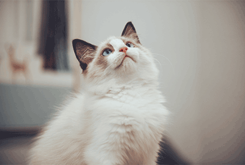

Q: How long do Labradors live?
Re: The life span of Labrador breeds is 8 to 12 years. Nowadays, many Labrador breeds can live beyond the age of 15. The key factor is the gradual improvement of medical standards and breeding standards. But need to pay attention to, do not raise the Labrador too fat, excessive exercise when young, unhealthy diet, etc..

Q: Could cat drink milk?
Re: Because cats are lactose tolerant, milk can upset their intestines and stomach. Dry cat food is the first nutritional supplement for cats. Dry food is cheap, convenient and keeps cats nourished. If you have special needs, follow the doctor's advice that it is not a good idea to feed your cat too much food.